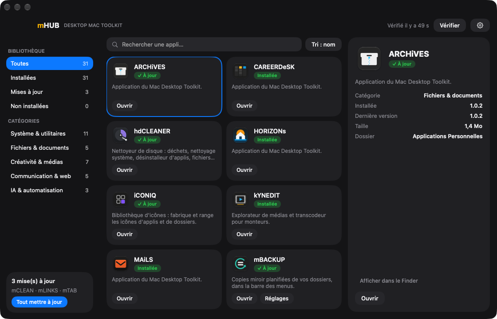
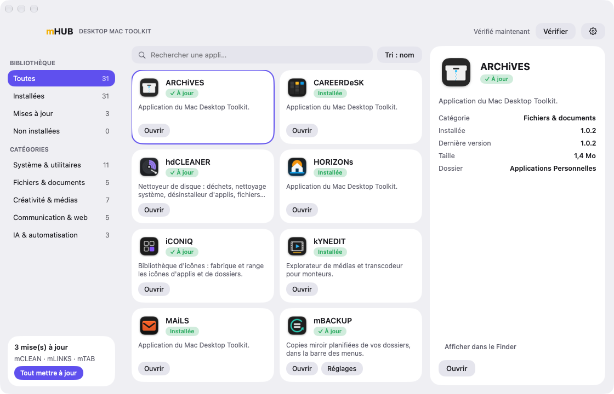
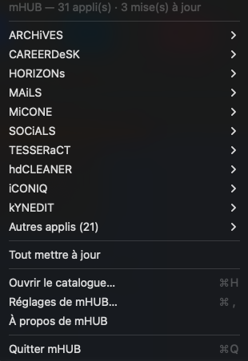
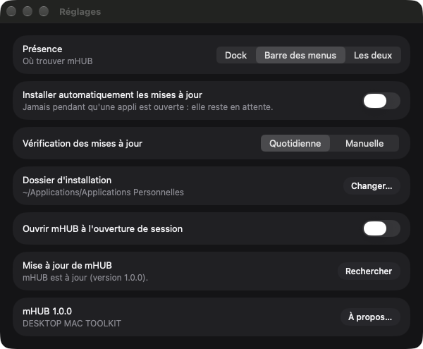

Le design Flat Round suit le thème du système : fond mat, grands arrondis (20), cartes blanches ou anthracite, accent bleu en sombre et violet en clair. Le « m » du nom prend la couleur du logo.


The Flat Round design follows the system theme: matte background, large corner radius (20), white or charcoal cards, blue accent in dark and violet in light. The “m” of the name takes the logo colour.